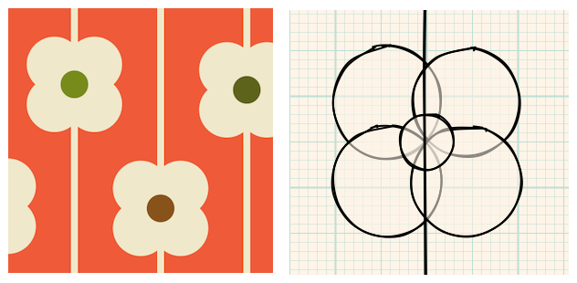
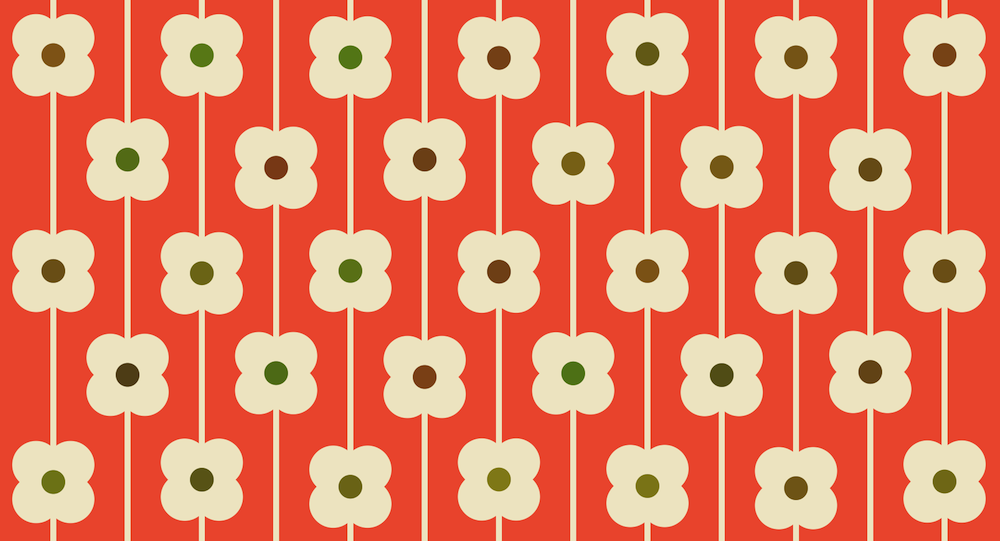
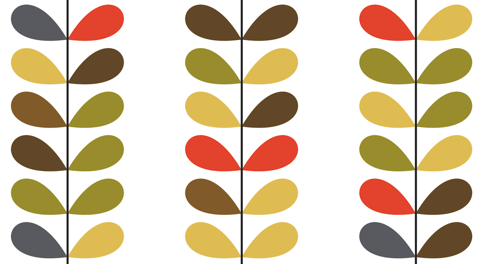
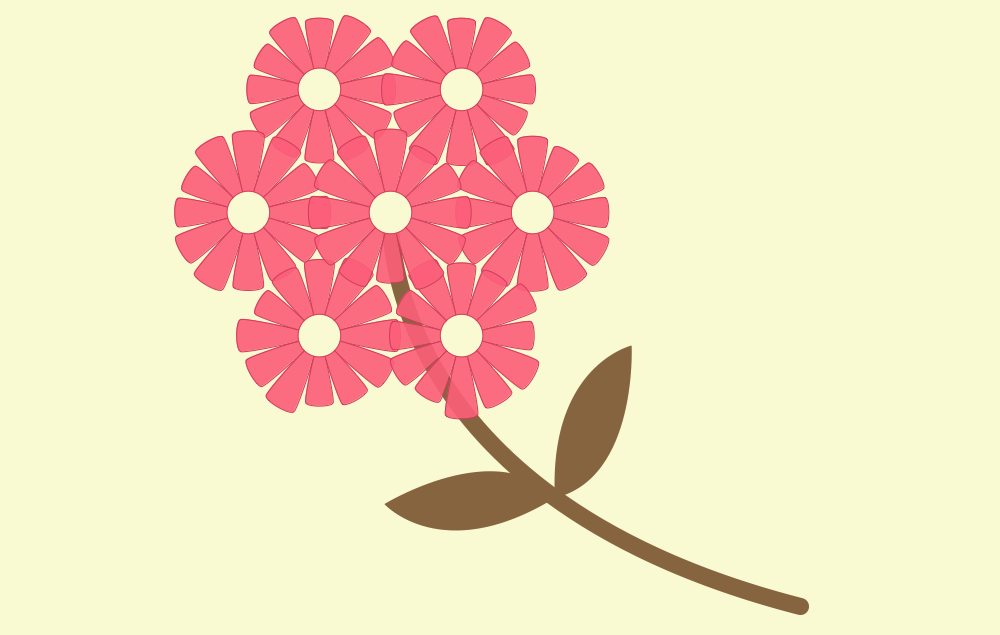

Many print designs (for example, for wallpaper and fabrics) are composed of repeated patterns of geometric
shapes. This project involves using Processing to create your own print designs. It uses the works of Orla Kiely as an example, but feel free to create your
own designs or look at other designers for inspiration.
You may wish to do a Google image search for Orla Kiely for examples of some of her print designs. When
looking at these designs, consider how the patterns are made up by combining simple shapes such as circles,
ellipses and curved lines.
For example, the simple flower design below can be constructed by drawing 4 circles as petals and a central
small circle at the centre of the flower.

More complex designs can often be broken down into a set of simple graphical objects. In this project you
will need to think about how to combine these simple graphical objects to create the design you are after.
This may involve drawing features in a loop (for example, the 12 petals of a flower or many flowers
in a row). You may also find it easier to create your own methods to do particular bits of drawing. For
example, you might create a drawFlower() method that has within it, a loop that calls a
drawPetal() method several times. Once you have your drawFlower() method working,
you can call it multiple times to create the grid of flowers that form your print design.
Here are some ideas for building on this project theme. You don't have to follow any of these ideas but they
might provide some helpful pointers and ideas for you to build upon:
- Have a look for some print designs that you like and try, on a piece of paper, to break down the design
into the construction of simple shapes. Build your Processing program to reproduce the design.
- Write a sketch that generates some random designs. This might involve using Randomness to
vary the size and appearance of the shapes that make up your design.
- Consider how some mouse or keyboard interaction might influence the appearance of your design. For
example, perhaps as you move the mouse in one direction, the size or number of the petals in a flower
might change.
- Create some 'living wallpaper' where the appearance of your print design slowly changes (e.g. a flower
might gradually grow or develop leaves).
Below are some examples of Orla Kiely designs that were recreated with Processing. Included in some cases
are some helper methods that you might wish to use or adapt in your own code.

Orla Kiely design built from 5 circles.

Orla Kiely design built from pairs of simple leaf shapes. As a helper, here is some Processing code to draw
a single leaf (copy the method to your own sketch and call it to see the results).
Show code
// Draws a leaf from the given position (xPos,yPos) of a length len and
// the given angle (in radians).
void drawLeaf(float xPos, float yPos, float len, float angle)
{
pushMatrix();
translate(xPos, yPos);
rotate(angle);
bezier(0, 0, 1.34*len, -0.9*len, 1.34*len, 0.9*len, 0, 0);
popMatrix();
}

A more complex flower design built from petal, flower and leaf shapes. Included is code to draw the leaves
and individual petals. You should be able to use your own code to draw 12 petals in a circle and the 7
flowers that make up the whole design.
Show code
// Draws a leaf between the two points (x1,y1) and (x2,y2)
void drawLeaf(float x1,float y1, float x2, float y2)
{
float curveAngle = radians(50);
float x = (x1-x2)/2f;
float y = (y1-y2)/2f;
float cx = x2 + x*cos(curveAngle) - y*sin(curveAngle);
float cy = y2 + y*cos(curveAngle) + x*sin(curveAngle);
beginShape();
vertex(x1,y1);
bezierVertex(cx, cy, x2, y2, x2, y2);
cx = x1 - x*cos(curveAngle) + y*sin(curveAngle);
cy = y1 - y*cos(curveAngle) - x*sin(curveAngle);
bezierVertex(x2,y2,cx,cy,x1,y1);
endShape();
}
// Draws a single petal centred at position (cx,cy) with the given radius.
// widthAngle is the width of the petal in radians and direction is the angular
// direction of the petal in radians (0 = pointing to the right).
void drawPetal(float cx, float cy, float radius, float widthAngle, float direction)
{
float p1x = cx + radius*cos(direction-0.5*widthAngle);
float p1y = cy + radius*sin(direction-0.5*widthAngle);
float p2x = cx + radius*cos(direction+0.5*widthAngle);
float p2y = cy + radius*sin(direction+0.5*widthAngle);
float p3x = cx + 0.2*radius*cos(direction+0.7*widthAngle);
float p3y = cy + 0.2*radius*sin(direction+0.7*widthAngle);
float p4x = cx + 0.2*radius*cos(direction-0.7*widthAngle);
float p4y = cy + 0.2*radius*sin(direction-0.7*widthAngle);
curveTightness(0.5); // Don't make lines too curvey.
beginShape();
curveVertex(p4x, p4y);
curveVertex(p1x, p1y);
curveVertex(p2x, p2y);
curveVertex(p3x, p3y);
curveVertex(p4x, p4y);
curveVertex(p1x, p1y);
curveVertex(p2x, p2y);
endShape();
}
Jo Wood, 2021